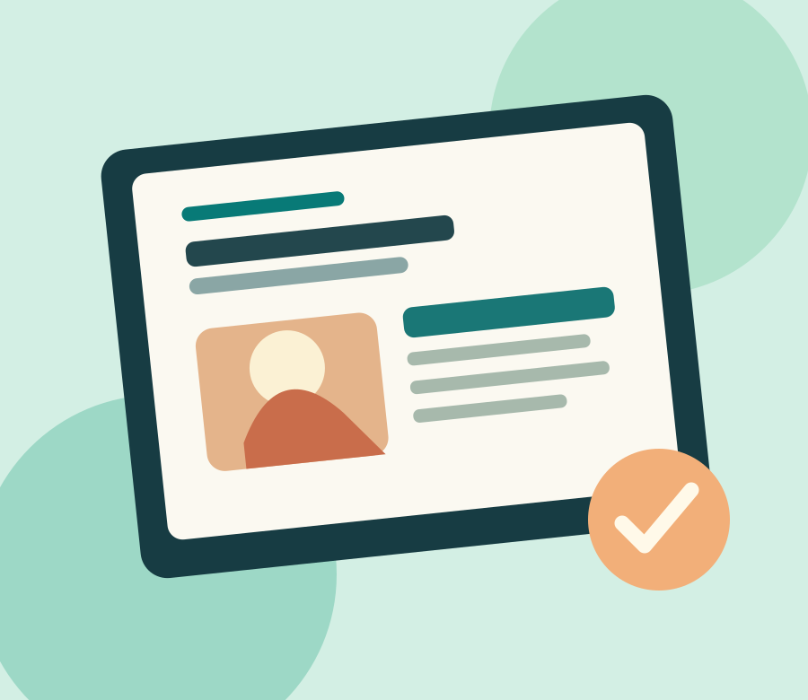

Organiza tu día sin vivir pendiente de la pantalla
Tres hábitos sencillos para utilizar la tecnología a tu favor y recuperar tiempo de calidad.
Leer artículoUn espacio para aprender y reflexionar
Ideas claras, consejos útiles y pequeñas acciones para disfrutar de un mundo digital más equilibrado, seguro y sostenible.
Explorar artículos
Desde el blog
Tres lecturas para empezar hoy.

Tres hábitos sencillos para utilizar la tecnología a tu favor y recuperar tiempo de calidad.
Leer artículo
Contraseñas, doble verificación y enlaces sospechosos: una guía básica para navegar con confianza.
Leer artículo
Cómo alargar la vida de nuestros dispositivos y disminuir residuos electrónicos sin complicarnos.
Leer artículoAcerca de este proyecto
Conexión Consciente es un blog educativo creado como actividad de Desarrollo de Aplicaciones en Red. Reúne contenido original y fácil de consultar sobre hábitos digitales, ciberseguridad básica y consumo tecnológico responsable.